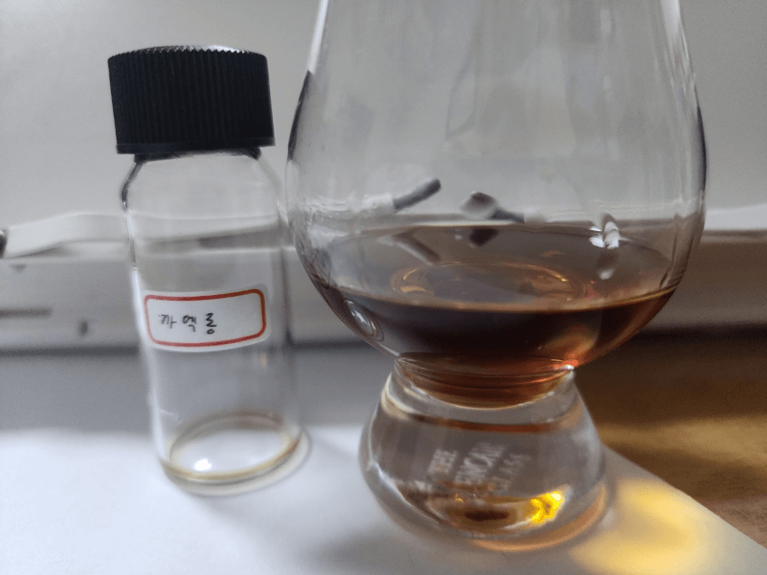

N
건포도보단 청포도에 가까운 포도 단 향이 느껴진다.
약간의 흙 향이 느껴지는데 이게 란시오인가 싶고 꿀 같은 단 향 또한 느껴진다.
시간이 지나면서 점점 풀릴 수록 달아지며, 약간의 시트러스한 느낌 또한 있는 거 같다.
좀 더 지나니까 버터의 고소한 향이 약간 느껴진다.
P
질감은 마치 물은 물인데 버터가 잘 유화되어서 녹아져있는 물 같다.
까뮤 롱넥 XO 대비 상당히 바디감이 워터리하지 않아서 좋은 듯!
우선 오크의 영향이 전무해서 오키함과 탄닌감이 전혀 없고 향과는 달리 되게 미약한 청포도의 단맛이 난다.
대신 우유, 버터 같은 고소함이 입에 가득 돈다.
F
유지방 특유의 고소한 맛과 약간의 느끼함이 느껴진다.
약간의 탄닌감이 있으나 의외로 불쾌하지 않게 잘 어울린다.
고소함과 약간의 달달함이 길게 느껴진다.
원래 꼬냑에서 기대하던 포도포도함이 거의 전무했던 꼬냑이 아닌 다른, 완전 새로운 주종 같은 술이였다.
그러나, 신기하게도 우유를 좋아해서 그런가? 상당히 맛있었다!
왜 브갤에서 꼬냑 추천 ㅎㅎ 하면 까엑롱이 단골로 등장하는 지 알겠다.
오랜만에 보틀로 사보고 싶었던 꼬냑이였다!!
나눔해주신 Highcost 님 감사합니다!